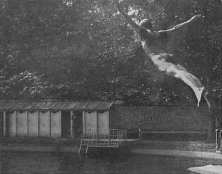
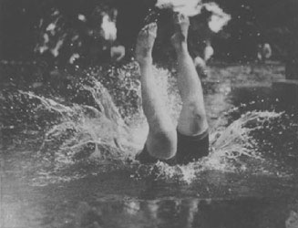
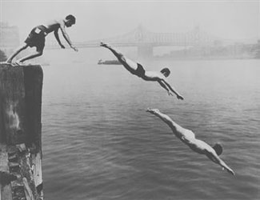
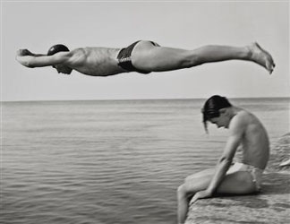
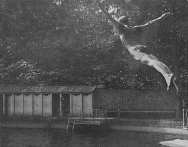
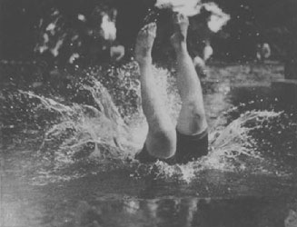
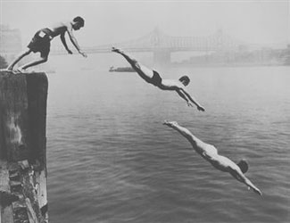
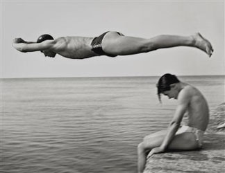

mechanism
mechanism  radical
art homepage
radical
art homepage
to dive
 |
 |
||
 |
 |
|

RS, July 2012
mechanism
to dive

Jacques Henri Lartigue:
Plongeur, 1910
Jacques Henri Lartigue: My cousin Jean Haguet
diving Into the swimming pool, 1911
Arthur Leipzig: Divers, East River. 1948
Nino Migliori: il Tuffatore, 1951

Aaron Siskind: Pleasures and Terrors of Levitation, # 37 (1953) and # 474 (1954)
RS, July 2012